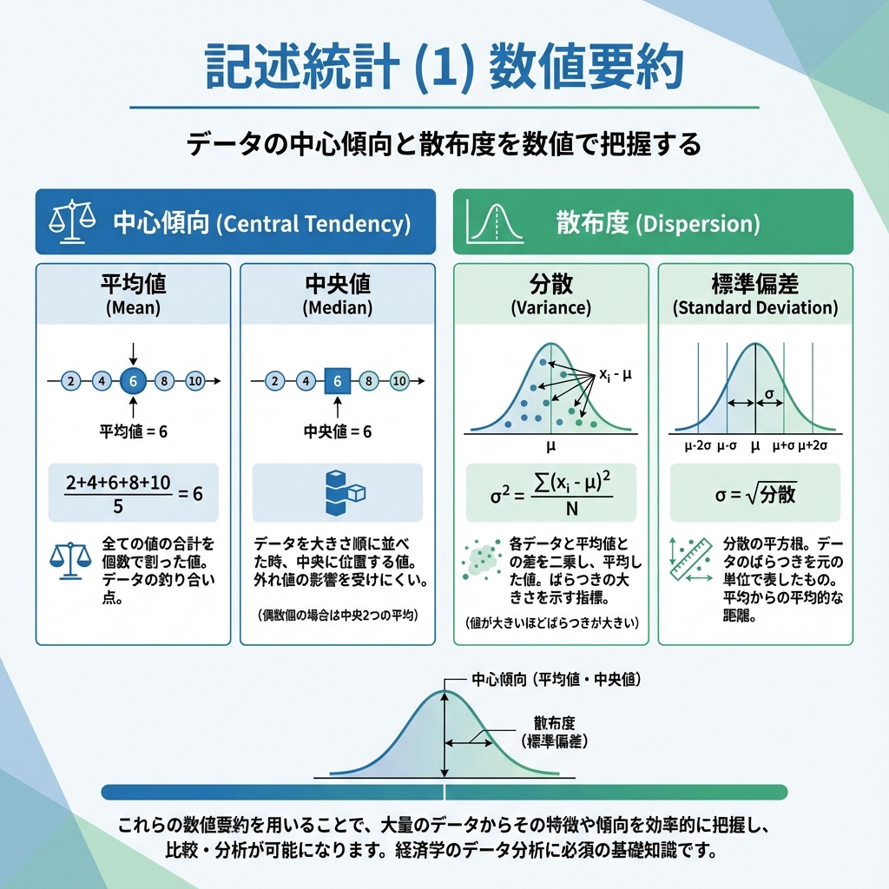
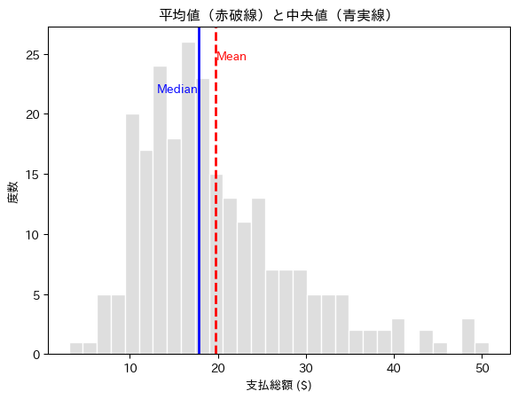

import pandas as pd
url = "https://raw.githubusercontent.com/mwaskom/seaborn-data/master/tips.csv"
tips = pd.read_csv(url)第3回 記述統計 (1) 数値要約

情報を「縮約」する
手元に1万人の顧客データがあるとします。上司に「客層はどうだい？」と聞かれたら、どう答えますか。 1万人全員の年齢を読み上げるわけにはいきません。「だいたい30代です」と答えるはずです。
記述統計（Descriptive Statistics）の本質は、ここにあります。 膨大な生のデータを、たった1つの数字（要約統計量）にまで圧縮する。多くの情報は捨てられますが、代わりに人間が理解できる「特徴」が浮かび上がります。
本節では、この「情報の圧縮技術」を学びます。キーとなるのは次の2点です。
- どこに集まっているか（中心的傾向）
- どれくらい散らばっているか（散布度）
準備
前回に引き続き、pandas と tips データセット（Bryant & Smith, 1995）を使います。
中心を探す：代表値
まずはデータの「顔」となる中心点を探します。ただ、「中心」の定義は一つではありません。
1. 全員の声を聞く：平均値 (Mean)
すべてのデータを足し合わせ、人数で割る。一番なじみ深い「中心」でしょう。
\[\bar{x} = \frac{1}{n}\sum_{i=1}^{n} x_i\]
tips["total_bill"].mean()19.78594262295082この指標には「全員の値を公平に扱う」という民主的な良さがあります。反面、極端な声（外れ値）に弱いのが欠点です。たった一人の超富裕層がいるだけで、全員の平均所得は跳ね上がってしまいます。
2. 真ん中の人を見る：中央値 (Median)
データを一列に並べたとき、ちょうど真ん中にいる人の値です。
tips["total_bill"].median()17.795こちらは「順位」しか見ないので、極端な値の影響をほとんど受けません（頑健性）。
3. 多派を見る：最頻値 (Mode)
最も頻繁に現れる値です。数値データよりも、アンケートの回答（賛成/反対）などのカテゴリデータで威力を発揮します。
# 最頻値は value_counts() で確認できる
tips["day"].value_counts()day
Sat 87
Sun 76
Thur 62
Fri 19
Name: count, dtype: int64意思決定：平均か、中央値か
どっちを使うべきか。迷ったら「世界の形（分布）」を見ます。
| 分布の形状 | 選び方の指針 |
|---|---|
| 左右対称（テストの点数など） | どちらもほぼ同じ値になります。数学的に扱いやすい平均値を選びます。 |
| 歪んでいる（年収、貯蓄額など） | 右に裾が長い場合、平均値は高すぎる値になります。実感を反映する中央値を選びます。 |
広がりを測る：散布度
データの特徴は「中心」だけでは語れません。「平均年収500万」と言っても、全員が500万の国と、0円と1000万がいる国では全く別物です。 この「散らばり具合」を数値にします。
最大と最小：範囲 (Range)
一番上と一番下の差です。単純ですが、全体像を掴むにはこれで十分なことも多いです。
# 最小値と最大値
tips["total_bill"].min(), tips["total_bill"].max()
# その差（範囲）
tips["total_bill"].max() - tips["total_bill"].min()47.74中心からの距離：分散 (Variance)
「平均からどれくらい離れているか」を全データについて計算し、平均したもの。 直感的には「差の絶対値」を平均したくなりますよね。でも、統計学では数学的な都合から「差を二乗」して扱います。
Python（pandas）の注意点: pandas.Series.var() は、手元のデータを標本とみなした不偏分散（分母が \(n-1\)、ddof=1）がデフォルトです。
\[s^2 = \frac{1}{n-1}\sum_{i=1}^{n} (x_i - \bar{x})^2\]
tips["total_bill"].var()79.25293861397826単位を戻す：標準偏差 (Standard Deviation)
分散は計算過程で「二乗」しているため、単位が「ドルの二乗」のようになり、直感的に分かりにくい。 そこで、平方根をとって元の単位に戻したのが標準偏差です。
\[s = \sqrt{s^2}\]
tips["total_bill"].std()8.902411954856856「平均値 \(\pm\) 標準偏差」の範囲に、多くのデータ（正規分布なら約68%）が含まれると考えるとイメージしやすいでしょう。
単位を消す：変動係数 (CV)
「象の体重のばらつき」と「アリの体重のばらつき」を比べたいとき、標準偏差（kgやg）そのままでは比較できません。 平均値に対する比率（%）に直すことで、スケールの異なるデータでも比べられます。
\[CV = \frac{s}{\bar{x}} \times 100\%\]
# チップの額と、支払総額。どちらが「ばらついて」いるか？
cv_tip = tips["tip"].std() / tips["tip"].mean() * 100
cv_bill = tips["total_bill"].std() / tips["total_bill"].mean() * 100
print(f"チップの変動係数: {cv_tip:.2f}%")
print(f"支払総額の変動係数: {cv_bill:.2f}%")チップの変動係数: 46.15%
支払総額の変動係数: 44.99%全体像をスキャンする：四分位数
データを小さい順に並べて4等分した地点（25%, 50%, 75%）を四分位数と呼びます。 describe() を使えば、これらの主要な統計量を一括で確認できます。
tips["total_bill"].describe()count 244.000000
mean 19.785943
std 8.902412
min 3.070000
25% 13.347500
50% 17.795000
75% 24.127500
max 50.810000
Name: total_bill, dtype: float64- Median（50%地点）と Mean（平均）のズレを見ることで、データの歪みを推測できます。
- 1st Qu（25%）から 3rd Qu（75%）の間には、データの中央半数が含まれます。
安定した広がり：四分位範囲 (IQR)
データの中央50%が収まる幅（第3四分位数 \(-\) 第1四分位数）を四分位範囲と呼びます。 標準偏差と違い、極端な値の影響を受けないため、外れ値を含むデータでのばらつき指標として優秀です。
tips["total_bill"].quantile(0.75) - tips["total_bill"].quantile(0.25)10.779999999999998ノイズか、シグナルか：外れ値の検出
統計分析において、極端に離れた値（外れ値）は厄介な存在です。入力ミス（ノイズ）なのか、特異な事象（シグナル）なのかを見極める必要があります。 一般的に、箱ひげ図のTukeyの基準を用いて「外れ値候補」を機械的に検出します。
- 下限: 第1四分位数 - 1.5 × IQR
- 上限: 第3四分位数 + 1.5 × IQR
Q1 = tips["total_bill"].quantile(0.25)
Q3 = tips["total_bill"].quantile(0.75)
IQR_val = Q3 - Q1
# 境界線の計算
lower_bound = Q1 - 1.5 * IQR_val
upper_bound = Q3 + 1.5 * IQR_val
print("外れ値の下限:", lower_bound)
print("外れ値の上限:", upper_bound)
# 境界を超えたデータを抽出してみる
tips.loc[
(tips["total_bill"] < lower_bound) | (tips["total_bill"] > upper_bound),
["total_bill", "tip", "day", "time"],
]外れ値の下限: -2.8224999999999945
外れ値の上限: 40.29749999999999| total_bill | tip | day | time | |
|---|---|---|---|---|
| 59 | 48.27 | 6.73 | Sat | Dinner |
| 102 | 44.30 | 2.50 | Sat | Dinner |
| 142 | 41.19 | 5.00 | Thur | Lunch |
| 156 | 48.17 | 5.00 | Sun | Dinner |
| 170 | 50.81 | 10.00 | Sat | Dinner |
| 182 | 45.35 | 3.50 | Sun | Dinner |
| 184 | 40.55 | 3.00 | Sun | Dinner |
| 197 | 43.11 | 5.00 | Thur | Lunch |
| 212 | 48.33 | 9.00 | Sat | Dinner |
分布の歪みを可視化する
平均値と中央値がずれているとき、実際にグラフを描くとその理由がわかります。 ヒストグラムに両者の位置を重ねてみましょう。
import seaborn as sns
import matplotlib.pyplot as plt
import japanize_matplotlib # noqa: F401
mean_val = tips["total_bill"].mean()
med_val = tips["total_bill"].median()
ax = sns.histplot(data=tips, x="total_bill", bins=30, color="lightgray", edgecolor="white")
ax.axvline(mean_val, color="red", linestyle="--", linewidth=2)
ax.axvline(med_val, color="blue", linestyle="-", linewidth=2)
y_top = ax.get_ylim()[1]
ax.text(mean_val, y_top * 0.9, "Mean", color="red", ha="left")
ax.text(med_val, y_top * 0.8, "Median", color="blue", ha="right")
ax.set(title="平均値（赤破線）と中央値（青実線）", xlabel="支払総額 ($)", ylabel="度数")
plt.show()
グループごとに要約する
全体の平均だけでは見えない違いもあります。性別や喫煙の有無など、属性ごとに分けて要約することで、より深い洞察が得られます。
(
tips
.groupby("sex", as_index=False)
.agg(
avg_bill=("total_bill", "mean"),
sd_bill=("total_bill", "std"),
count=("total_bill", "size"), # サンプルサイズも必ず確認する
)
)| sex | avg_bill | sd_bill | count | |
|---|---|---|---|---|
| 0 | Female | 18.056897 | 8.009209 | 87 |
| 1 | Male | 20.744076 | 9.246469 | 157 |
課題
自分の手でデータを縮約してみましょう。
tipsデータを使用し、時間帯 (time) ごとのチップ (tip) の平均値を算出してください。describe()を使用し、チップ (tip) の分布の要約統計量を確認してください。
練習問題
練習1: 基本的な記述統計の算出
tips データの size（グループの人数）について、以下の4つの統計量を算出してください。
- 平均値
- 中央値
- 標準偏差
- 範囲（最小値と最大値）
練習2: グループ別の比較検証
喫煙者 (smoker == "Yes") と非喫煙者 (smoker == "No") の2群において、支払総額 (total_bill) の平均値と標準偏差を比較してください。
練習3: 外れ値の影響を体感する
tipsデータに極端な外れ値（例:total_bill = 100）を持つ行を追加した新しいデータを作成してください。- 元のデータと新しいデータで、平均値と中央値がそれぞれどれくらい変化したかを確認してください。どちらが「頑健」でしたか？
※本節で用いた記述統計の指標一覧は、練習問題の振り返りとして自身のノートにまとめておくことを推奨します。